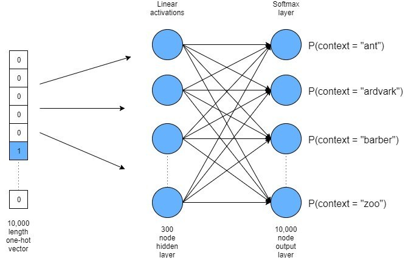
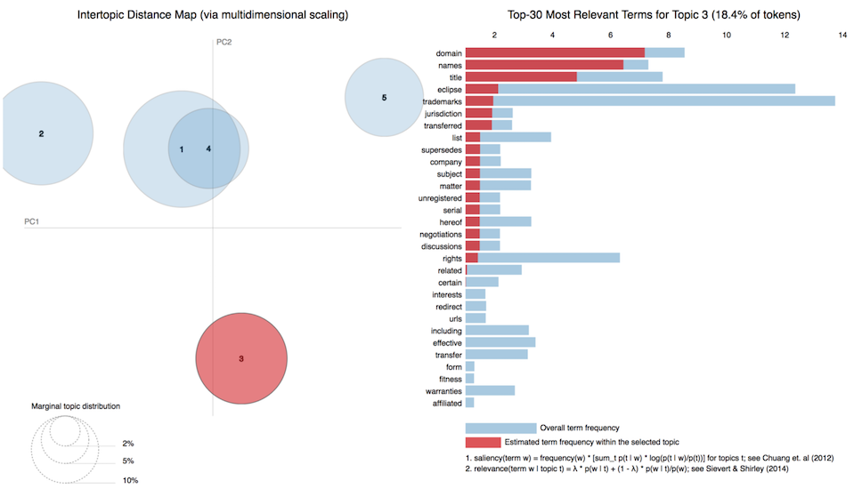
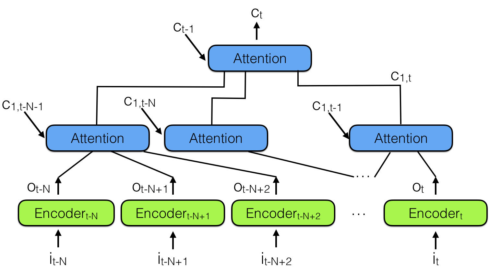

My work centers around the application of machine learning (ML) to audio signal processing, natural language processing, and more recently, computer security.
Below, please find my latest research papers and technology projects. My github repository contains all software developed for the research papers and technology projects.
This article presents a full end-to-end pipeline for Arabic Dialect Identification (ADI) using intonation patterns and acoustic representations.
Flamenco singing is characterized by pitch instability, micro-tonal ornamentations, large vibrato ranges, and a high degree of melodic variability. These musical features make the automatic identification of flamenco singers a difficult computational task. In this article we present an end-to-end pipeline for flamenco singer identification based on acoustic motif embeddings.
Application developed for The Language Flagship Technology Innovation Center that presents scenarios followed by a judgment task with a very specific cultural problem to be solved by the learner.
Distributed vector representation model for learning high quality folk song embeddings using a distributed semantic approach.
Topic modeling in Python is a tutorial developed for a Human Language Technology graduate program internship for the summer of 2019. It uses Jupyter Notebooks to present text and code examples, capturing the output and graphics from the topic model algorithms.
Deep neural network model with attention to classify folk song collections from different countries using a document classification approach.
